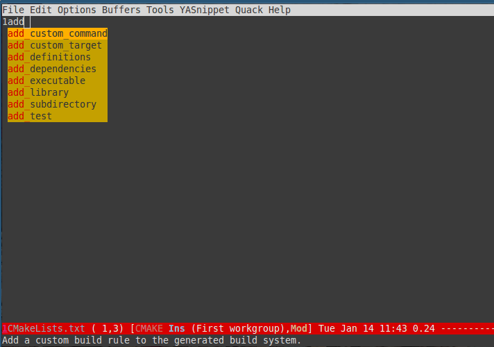

How to use keyboard to navigate feedly.com
Here is the detailed steps,
- Install keysnail (a firefox addon)
- Install HoK (no less than version 1.3.9) through keysnail
- Add below code into .keysnail.js
/* HoK / key.setViewKey('e', function (aEvent, aArg) { ext.exec("hok-start-foreground-mode", aArg); }, 'Hok - Foreground hint mode', true);key.setViewKey('E', function (aEvent, aArg) { ext.exec("hok-start-background-mode", aArg); }, 'HoK - Background hint mode', true);
key.setViewKey(';', function (aEvent, aArg) { ext.exec("hok-start-extended-mode", aArg); }, 'HoK - Extented hint mode', true);
key.setViewKey(['C-c', 'C-e'], function (aEvent, aArg) { ext.exec("hok-start-continuous-mode", aArg); }, 'Start continuous HaH', true);
hook.addToHook('PluginLoaded', function () { if (!plugins.hok) return;
/ HoK 1.3.9+ requried / plugins.hok.pOptions.selector = plugins.hok.pOptions.selector / feedly / + ", [data-uri]" + ", [data-selector-toggle]" + ", [data-page-action]" + ", [data-app-action]" ; });
- Restart Firefox, logged into http://www.feedly.com and press hot key "e"
- Enjoy!
How to use yasnippets to produce email templates in Emacs
CREATED:
UPDATED:
Problem
As a freelancer, I need reply agent's email frequently.
So I have several issues to resolve:
- Avoid writing multiple mails with similar content
- Avoid attaching same resume again and again
- Get the agent's name right. This is not easy since I'm living in Sydney
Solution
Yasnippet is the best solution for email templates because you can embed Lisp code in the template.
Templates
I publicize my .emacs.d at github. But email templates are my private stuff. So I place them in different location.
That's why I place templates at ~/my-yasnippets/message-mode/.
Here is a sample template to reply my agents (jobok.yasnippet):
# -*- mode: snippet -*-
# name: email for OK job
# key: jobok
# --
Hi ${1:`(my-yas-get-first-name-from-to-field)`},
Thank you very much for providing me this great opportunity.
Unfortunately I'm occupied now and will not consider new job for the time being.
Currently I'm working for ${2:COMPANY_NAME} as a contract developer. However, the
contract will be over ${3:END_OF_CONTRACT} and I will be available then.
So keep in touch.
Attached is my latest CV.
$0
<#part type="application/msword" filename="~/org/cv/cv.doc" disposition=attachment description=resume>
<#/part>
`(my-yas-get-first-name-from-to-field)` is a Lisp function embedded in the snippet.
It will automatically fetch the first name of agent,
(defun my-yas-get-first-name-from-to-field ()
(let ((rlt "AGENT_NAME") str)
(save-excursion
(goto-char (point-min))
;; first line in email could be some hidden line containing NO to field
(setq str (buffer-substring-no-properties (point-min) (point-max))))
(if (string-match "^To: \"\\([^ ,]+\\)" str)
(setq rlt (match-string 1 str)))
(message "rlt=%s" rlt)
rlt))
Emacs setup
Add following code into .emacs to make yasnippet load the emacs templates:
(require 'yasnippet)
(setq my-yasnippets (expand-file-name "~/my-yasnippets"))
(if (and (file-exists-p my-yasnippets) (not (member my-yasnippets yas-snippet-dirs)))
(add-to-list 'yas-snippet-dirs my-yasnippets))
;; yasnippet setup code should be AFTER
(yas-global-mode 1)
Make Emacs support auto-completion for CMake
Easy. You only install company-mode and company-cmake.el according to the documentation HERE.
company-cmake.el is written by me. I'm in the process of signing necessary copyright papers to make it part of company-mode. I was told the process could take one month because I'm deal with GNU foundation. So please be patient.
Anyway, you can use company-cmake.el right now with company-mode without any problem.
Please note I only tested this plugin with cmake 2.8.
Here is screen shot: 
UPDATED (12th Jan, 2014): Legal procedure is done. Now company-cmake.el is officially part of company-mode since version 0.6.12.
So all you need to do is install latest company-mode, no other set up required!
Convert multiple line into one big string in Emacs
This command will convert selected region in Emacs into one string and put it into the kill ring.
Why I need this command? I'm doing some web developement now. I've got a javascript API whose parameter is a string in html syntax. I write that beautifully indented multiple lines string in html editor to make sure the string is correct. Then I convert the multiple lines string into one string without line breaks so that I can paste the one line string into my javascript code.
In certain situation, this method actually makes code more readable.
Here is code you can paste into your .emacs:
(defun strip-convert-lines-into-one-big-string (beg end) "strip and convert selected lines into one big string which is copied into kill ring.When transient-mark-mode is enabled, if no region is active then only the
current line is acted upon.
If the region begins or ends in the middle of a line, that entire line is
copied, even if the region is narrowed to the middle of a line.
Current position is preserved." (interactive "r") (let (str (orig-pos (point-marker))) (save-restriction (widen) (when (and transient-mark-mode (not (use-region-p))) (setq beg (line-beginning-position) end (line-beginning-position 2)))
(goto-char beg) (setq beg (line-beginning-position)) (goto-char end) (<span style="color: #b5bd68;">unless</span> (= (point) (line-beginning-position)) (setq end (line-beginning-position 2))) (goto-char beg) (setq str (replace-regexp-in-string <span style="color: #8abeb7;">"[ \t]*\n"</span> <span style="color: #8abeb7;">""</span> (replace-regexp-in-string <span style="color: #8abeb7;">"^[ \t]+"</span> <span style="color: #8abeb7;">""</span> (buffer-substring-no-properties beg end)))) <span style="color: #969896; font-style: italic;">;; </span><span style="color: #969896; font-style: italic;">(message "str=%s" str)</span> (kill-new str) (goto-char orig-pos)))) (global-set-key (kbd "C-c C-y") 'strip-convert-lines-into-one-big-string)
How to manage my software configuration at github
Problem
Here is the situation:
- I've set up a repository at github to store my configuration of specifi software.
- I synchronize the configuration with several computers
- All these computers belongs to me only.
My issue is after using git pull/push for some time. My commit history looks not linear.
Solution
Simple. I need use git pull –rebase origin master instead of git pull origin master
Rebase will usually rewrite my commit history at your local branch. It's totally fine because I won't share the software configuration on my local computer. If I want to share my configuration, I will use the public url at github.
My work flow to debug emacs plugin
Author: Chen Bin <chenbin.sh AT gmail DOT com> Created:
This is my quick guide on how to start debugging elisp. It's written for developers who are already experienced on debugging program but too lazy to read the Edebug manual.
The most critical set up for the debugging is to set the hot key "C-h C-f" to the command "find-function" so you can jump the definition of the function easily.
(global-set-key (kbd "C-h C-f") 'find-function)
Here is my workflow.
start the debugging
- Jump to the definition of the command (The hot key is "C-h C-f", as I mentioned before).
- Run "M-x edebug-defun" . This will set the breakpoint into the entry of the command. BTW, I run "M-x eval-defun" in the function body to undo "edebug-defun".
- Run the command to be debugged from Emacs
- Press "space" key (M-x edebug-step-mode) to debug the program step by step
- Watch the value of expression in the mini-buffer when you press "space" key
basic debug operation
- Press "i" key (M-x edebug-step-in) to step in
- Press "o" key (M-x edebug-step-out) to step out
- Press "b" key (M-x edebug-set-breakpoint) to set the break point (press "u" key unset break point. I don't use this though)
- Press "g" key (M-x edebug-go-mode) to continue
- Press "h" key (M-x edebug-goto-here) to proceed until at the current line
Watch the variable and functions
- Press "e" key (M-x edebug-eval-expression) to run the expression in the context outside of Edebug. Basically it means print a variable's value. Very useful.
- Press "C-x C-e" key (M-x edebug-eval-last-sexp) in the context outside of Edebug. Similar to "e", useful if you are lazy to input the expression manually.
"Outside of Edebug" means you are only watching the variable's value. You will NOT change the status of program being debugged
Set the variable
- Press "M-:" key (M-x eval-expression) to evaluate the expression in the context of Edebug itself.
I usually don't do this. It's not my debugging style.
Start wxWidgets programming on Linux/OSX
wxWidgets 3.0.0
WARNING: before building, please make sure remove everything in build directory, including hidden directory!
Install webkit by using Linux distribution's package manager
I need use wxWebView which dependent on webkit on Linux. The issue here is that webkit on Linux is using GTK.
Make sure the webkit and wxWidgets are using same version of GTK.
build the source
Please note I don't use libtiff. I think libpng and libjpeg is enough.
mkdir -p ${WXWIN}/build-release;cd ${WXWIN}/build-release;../configure --disable-shared --without-libtiff;make
mkdir -p ${WXWIN}/build-debug;cd ${WXWIN}/build-debug;../configure --disable-shared --enable-debug --without-libtiff;make
On OSX, I need extra "–with-osx_cocoa" parameter for configure.
On Linux, build will be fine following above steps. But for building applicaition, I need "sudo apt-get install libgtk2.0-dev" on debian/ubuntu/mint.
Notes to install Gentoo Linux
intel integrated video card
Enable KMS (Kernel Mode Setting) for Intel (Device Drivers => Graphic => Intel) is critical:
sudo genkernel --menuconfig all
grub2
let grub2 create the cfg for me automatically,
grub2-mkconfig -o /boot/grub2/grub.cfg
network
for ethernet:
cd /etc/init.d ln -s net.lo net.eth0 echo 'config_eth0="dhcp"' >> /etc/conf.d/net /etc/init.d/net.eth0 start rc-update add net.eth0 default
for wireless:
# I need setup /etc/wpa_supplicant/wpa_supplicant.conf at first cd /etc/init.d ln -s net.lo net.ra0 echo 'config_ra0="dhcp"' >> /etc/conf.d/net /etc/init.d/net.ra0 start rc-update add net.ra0 default
Content of /etc/wpa_supplicant/wpa_supplicant.conf:
#let wpa_supplicant take care of scanning and AP selection
ap_scan=1
#simple case: WPA-PSK, PPSK as an simple passphrase
http://en.gentoo-wiki.com/wiki/Time_Synchronization#htpdatehttp://en.gentoo-wiki.com/wiki/Time_Synchronization#htpdatenetwork={
ssid="myssid"
psk="mypassword"
# the higher priority the sooner we matched
priority=5
}
clock synchronization
htpdate is great because it only use HTTP protocol, don't forget add server in its config file.
sound
Nothing to tell. There may be some issue, but I forgot.
Find files provided by the installed package
dpkg -L emacs # Debian/Ubuntu pacman -Ql emacs # ArchLinuxrpm -qlp emacs # Redhat/Centos
cygcheck -l emacs # Cygwin
brew ls --verbose emacs # Homebrew
equery f emacs # Gentoo Linux, you need install gentoolkit
gem contents zurb-foundation # Ruby gem
Moving focus and buffer between Emacs window
Please read the excellent article Moving between Emacs windows for basic setup.
Here is my summary of that article:
- you can use windmove.el (embedded in Emacs). Its hotkey is Shift+Arrow.
- switch-window.el is great. The default hot key is "C-x o".
I love switch-windows.el. It's only three key strikes to select a window.
I also use other packages which is more efficient.
window-numbering.el
window-numbering.el is the best. It uses hot key "M-NUM" to switch window (for example, "M-3" to select window with number 3). So I can press only one key to switch window. Besides, it has some extra features like "M-0" to jump to the minbuffer.
Here is my configuration of window-numbering.el:
(require 'window-numbering)
;; highlight the window number in pink color
(custom-set-faces '(window-numbering-face ((t (:foreground "DeepPink" :underline "DeepPink" :weight bold)))))
(window-numbering-mode 1)
evil-mode
evil-mode is a vim-emulation. It use vim's keybindings (C-w h/j/k/l) to move. Please note "C-w h" is more efficient than "C-x o". It's because "w" key is more close than "x" key and "h/j/k/l" is easy to press.
buffer-move.el
buffer-move.el moves the buffer instead of focus between windows. It can be installed through MELPA.
Here is my configuration:
(global-set-key (kbd "C-c C-b C-k") 'buf-move-up)
(global-set-key (kbd "C-c C-b C-j") 'buf-move-down)
(global-set-key (kbd "C-c C-b C-h") 'buf-move-left)
(global-set-key (kbd "C-c C-b C-l") 'buf-move-right)
updated
I use keyfreq to record all my key pressing for more than six months.
According to the data collected by keyfreq, more than 99 percent of my moving focus between windows is done through window-numbering.el.
So it's necessary to optimize window-numbering.el further. By default, window-numbering.el uses "M-num" key to select window which is already efficient. But as a geek, I have a tendency to push the efficiency to the extreme end.
Finally I use hotkey ",1", ",2", and ",3" to switch to the window numbering "1", "2", and "3".
Here is the code:
(define-key evil-normal-state-map ",1" 'select-window-1)
(define-key evil-normal-state-map ",2" 'select-window-2)
(define-key evil-normal-state-map ",3" 'select-window-3)
(define-key evil-normal-state-map ",4" 'select-window-4)
Check my setup at github.